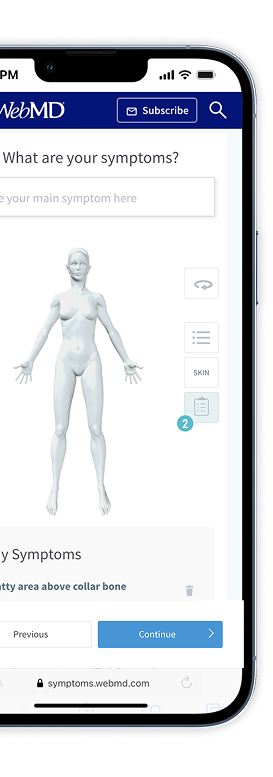
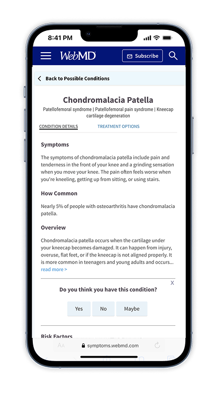
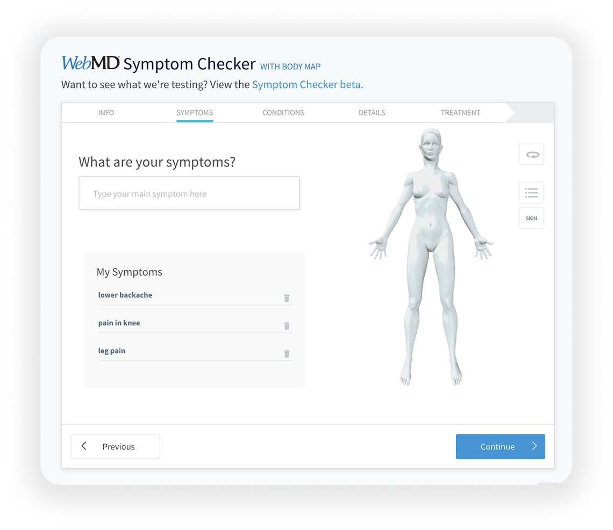

Selected Work
Symptom Checker
The Problem
Design practices weren’t scaled or consistent across WebMD/Medscape’s flagship products, limiting retention, engagement, and conversion. Accuracy was also a perception problem — WebMD had become a punchline on late-night TV and comedy shows (“it’s always cancer”), and that reputation wasn’t something a visual redesign alone was going to fix.
My Role & Impact
Led the redesign of the Symptom Checker while building the process and team practice around it, including a “design buddy” mentorship structure. To address the trust problem directly, the team developed an accuracy meter and made it easier to add new symptoms — more data in, more accurate results out.


Metrics & Outcomes
The accuracy meter and expanded symptom-input tooling became the direct answer to the trust problem, and the underlying design system was later adopted across WebMD’s other properties.
Navigating Roadblocks
Leading the team felt like whack-a-mole — there was always something new to deal with. Getting comfortable being uncomfortable, and helping the team understand the business value of design, was the ongoing work.

Other Selected Work

Lakatta
solo founder-designer · AI-assisted development · 0→1 build · brand & design system

CancerCompass
executive leadership · 0→1 product strategy · clinical stakeholder alignment · patient research · AI product integration

Telehealth
service design · workflow audit · cross-functional partnership · patient interviews